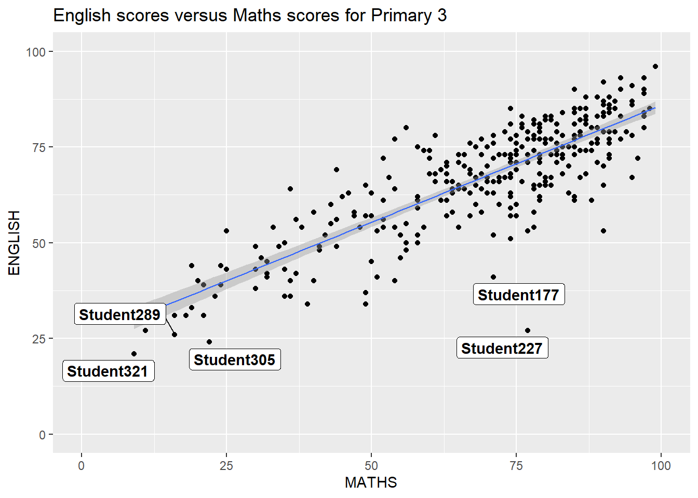
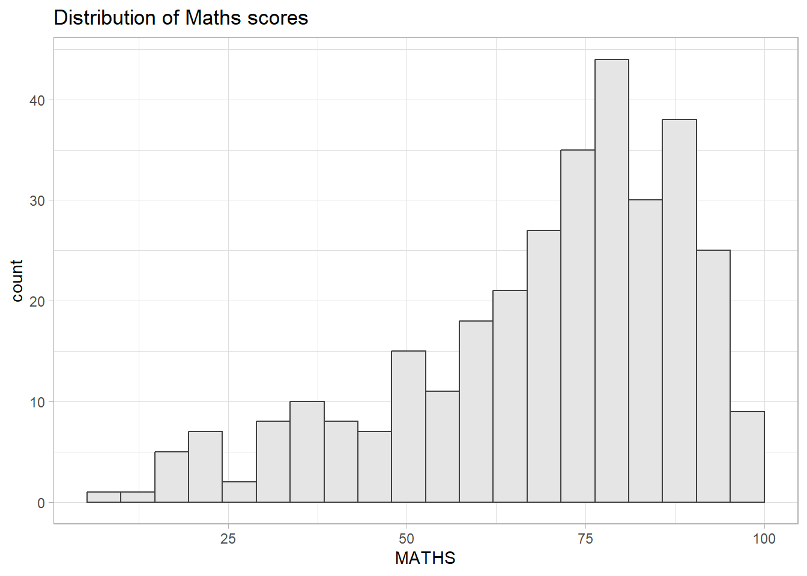
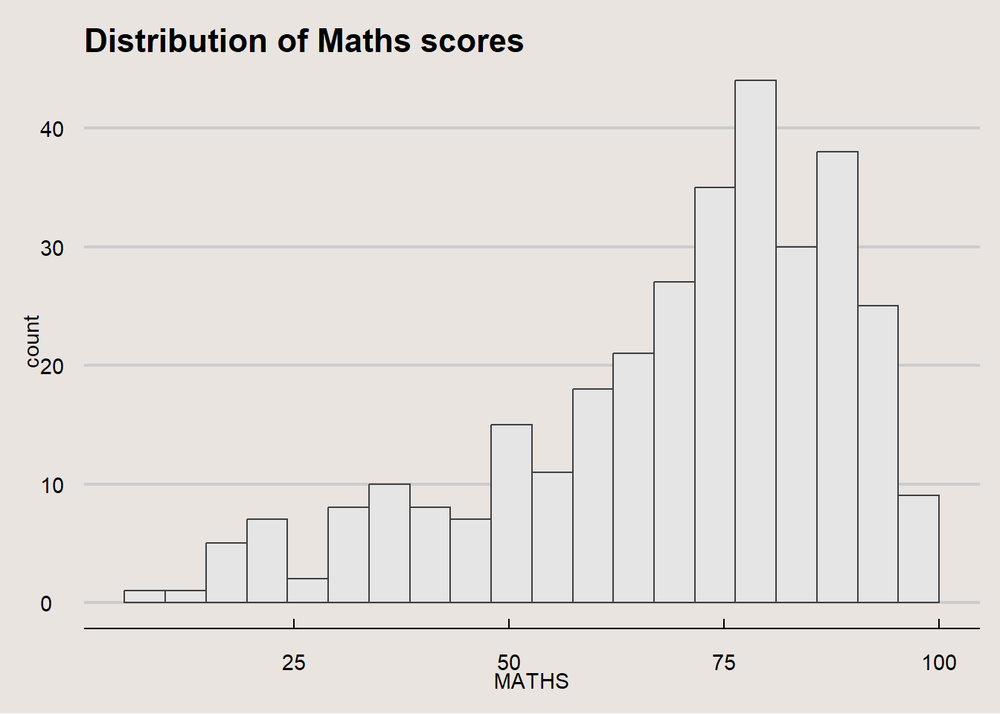

| Package | Status |
|---|---|
| tidyverse | Data manipulation and core visualization |
| ggrepel | Prevents text labels from overlapping on plots |
| patchwork | Combines multiple plots into one layout |
| ggthemes | Premade themes |
| hrbrthemes | igh-quality, typography-centric themes |
Hands-on Exercise 2
Getting Started
Install and launching the required libraries
Local Package Check
Show the code
pacman::p_load(ggrepel, patchwork,
ggthemes, hrbrthemes,
tidyverse) Importing Data
exam_data <- read_csv("data/Exam_data.csv")Rows: 322 Columns: 7
── Column specification ────────────────────────────────────────────────────────
Delimiter: ","
chr (4): ID, CLASS, GENDER, RACE
dbl (3): ENGLISH, MATHS, SCIENCE
ℹ Use `spec()` to retrieve the full column specification for this data.
ℹ Specify the column types or set `show_col_types = FALSE` to quiet this message.glimpse(exam_data)Rows: 322
Columns: 7
$ ID <chr> "Student321", "Student305", "Student289", "Student227", "Stude…
$ CLASS <chr> "3I", "3I", "3H", "3F", "3I", "3I", "3I", "3I", "3I", "3H", "3…
$ GENDER <chr> "Male", "Female", "Male", "Male", "Male", "Female", "Male", "M…
$ RACE <chr> "Malay", "Malay", "Chinese", "Chinese", "Malay", "Malay", "Chi…
$ ENGLISH <dbl> 21, 24, 26, 27, 27, 31, 31, 31, 33, 34, 34, 36, 36, 36, 37, 38…
$ MATHS <dbl> 9, 22, 16, 77, 11, 16, 21, 18, 19, 49, 39, 35, 23, 36, 49, 30,…
$ SCIENCE <dbl> 15, 16, 16, 31, 25, 16, 25, 27, 15, 37, 42, 22, 32, 36, 35, 45…summary(exam_data) ID CLASS GENDER RACE
Length:322 Length:322 Length:322 Length:322
Class :character Class :character Class :character Class :character
Mode :character Mode :character Mode :character Mode :character
ENGLISH MATHS SCIENCE
Min. :21.00 Min. : 9.00 Min. :15.00
1st Qu.:59.00 1st Qu.:58.00 1st Qu.:49.25
Median :70.00 Median :74.00 Median :65.00
Mean :67.18 Mean :69.33 Mean :61.16
3rd Qu.:78.00 3rd Qu.:85.00 3rd Qu.:74.75
Max. :96.00 Max. :99.00 Max. :96.00 Beyond ggplot2 Annotation: ggrepel
Without ggrepel

ggplot(data=exam_data,
aes(x= MATHS,
y=ENGLISH)) +
geom_point() +
geom_smooth(method=lm,
size=0.5) +
geom_label(aes(label = ID),
hjust = .5,
vjust = -.5) +
coord_cartesian(xlim=c(0,100),
ylim=c(0,100)) +
ggtitle("English scores versus Maths scores for Primary 3")Working with ggrepel

ggplot(data=exam_data,
aes(x= MATHS,
y=ENGLISH)) +
geom_point() +
geom_smooth(method=lm,
size=0.5) +
geom_label_repel(aes(label = ID),
fontface = "bold") +
coord_cartesian(xlim=c(0,100),
ylim=c(0,100)) +
ggtitle("English scores versus Maths scores for Primary 3")Beyond ggplot2 Themes

ggplot(data=exam_data,
aes(x = MATHS)) +
geom_histogram(bins=20,
boundary = 100,
color="grey25",
fill="grey90") +
theme_gray() +
ggtitle("Distribution of Maths scores") Working with ggtheme package

ggplot(data=exam_data,
aes(x = MATHS)) +
geom_histogram(bins=20,
boundary = 100,
color="grey25",
fill="grey90") +
theme_economist() +
ggtitle("Distribution of Maths scores") Working with hrbthemes package

ggplot(data=exam_data,
aes(x = MATHS)) +
geom_histogram(bins=20,
boundary = 100,
color="grey25",
fill="grey90") +
ggtitle("Distribution of Maths scores") +
theme_ipsum()
### The code
ggplot(data=exam_data,
aes(x = MATHS)) +
geom_histogram(bins=20,
boundary = 100,
color="grey25",
fill="grey90") +
ggtitle("Distribution of Maths scores") +
theme_ipsum(axis_title_size = 18,
base_size = 15,
grid = "Y")
Note
axis_title_sizeargument is used to increase the font size of the axis title to 18base_sizeargument is used to increase the default axis label to 15gridargument is used to remove the x-axis grid lines
Beyond Single Graph

p1 <- ggplot(data=exam_data,
aes(x = MATHS)) +
geom_histogram(bins=20,
boundary = 100,
color="grey25",
fill="grey90") +
coord_cartesian(xlim=c(0,100)) +
ggtitle("Distribution of Maths scores")
p2 <- ggplot(data=exam_data,
aes(x = ENGLISH)) +
geom_histogram(bins=20,
boundary = 100,
color="grey25",
fill="grey90") +
coord_cartesian(xlim=c(0,100)) +
ggtitle("Distribution of English scores")
p3 <- ggplot(data=exam_data,
aes(x= MATHS,
y=ENGLISH)) +
geom_point() +
geom_smooth(method=lm,
size=0.5) +
coord_cartesian(xlim=c(0,100),
ylim=c(0,100)) +
ggtitle("English scores versus Maths scores for Primary 3")Creating Composite Graphics
Combining 2 ggplot2 graphs

p1 + p2Combining 3 ggplot2 graphs

(p1 / p2) | p3Creating a composite figure with tag

((p1 / p2) | p3)+
plot_annotation(tag_levels = 'I')Creating figure with insert

p3 + inset_element(p2,
left = 0.02,
bottom = 0.7,
right = 0.5,
top = 1)Creating a composite figure by using patchwork and ggtheme
p1 + p2
patchwork <- (p1 / p2) | p3
patchwork`geom_smooth()` using formula = 'y ~ x'
patchwork <- (p1 / p2) | p3
patchwork & theme_economist()